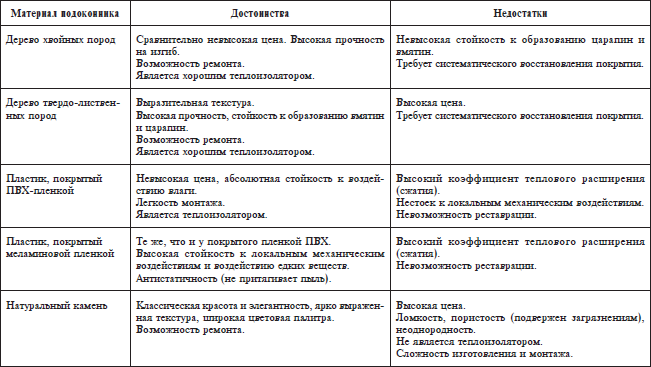
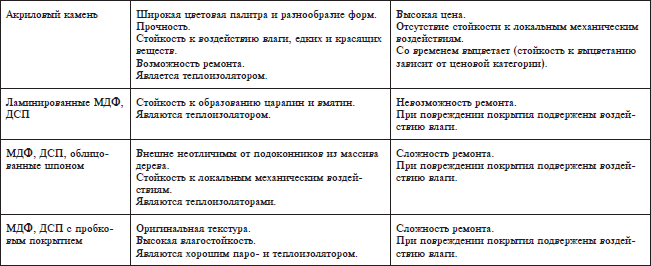

Окна.


Окно состоит из следующих элементов:
рама – неподвижная пластиковая часть окна, на которую крепятся створки;
створка – открывающаяся часть окна;
стеклопакет – стекла, герметично скрепленные между собой;
фурнитура – все устройства, обеспечивающие открывание створок, запирание и фиксацию в каком-нибудь положении. Например, ручки, шпингалеты, запорные механизмы и т. д.;
армирующий профиль – стальной элемент, находящийся внутри поливинилхлоридного (ПВХ) профиля, служащий для обеспечения жесткости конструкции пластикового окна;
импост – профиль, который используется для визуального разделения конструкции на части. Может быть вертикальным, горизонтальным, наклонным;
штапик – пластиковая рейка, удерживающая стеклопакет в окне;
отлив – плоский и широкий профиль, крепится снаружи окна для отвода дождевой воды;
откос – плоский и широкий профиль, используемый для отделки боковых поверхностей оконного проема.
СтеклопакетыСтеклопакеты по числу скрепленных стекол подразделяются на однокамерные (2 стекла) и двухкамерные (3 стекла). Иногда достаточно заполнения в одно стекло , например, в офисных перегородках, «холодных» входных группах, раздвижных алюминиевых конструкциях для остекления лоджий и балконов.
Кроме обычного прозрачного стеклав стеклопакетах используется тонированное стекло.По технологии производства оно подразделяется на тонированное в массе и тонированное с помощью пленки. Тонированное в массе стекло окрашивается химическим способом при его производстве, соответственно, тонировка пленкой может осуществляться на любом этапе производства и установки окна. Кроме того стекло может быть бронированным с помощью пленки.Существуют различные классы упрочняющих пленок (АО,5; Al; А2; АЗ), устойчивых к ударам различной силы. При ударе тяжелым предметом по бронированному стеклу осколки не разлетаются, а удерживаются ударопрочной пленкой.
Энергосбережение . Согласно принятым в Украине стандартам, сопротивление теплопередаче изделий должно приниматься в соответствии со следующими требованиями не менее: для 1-й климатической зоны – 0,5 м °С/Вт; для 2-й и 3-й климатической зон – 0,42 м °С/Вт; для 4-й климатической зоны – 0,39 м °С/Вт.
Поскольку стеклопакет занимает более 70 % оконной конструкции, то основная часть теплопотерь происходит именно через него. Для уменьшения потерь теплового излучении разработаны так называемые селективные(низкоэмиссионные) стекла со специальным покрытием.В данное время существует два вида таких стекол:
К-стекло – с твердым покрытием и I-стекло – с мягким покрытием. I-стекло имеет теплоизоляционные характеристики в
1,5 раза выше, чем К-стекло, поэтому доля такого стекла на рынке постоянно растет. За последние 10 лет в США применение стеклопакетов с теплосберегающими покрытиями возросло с 10 до 70 % от всего объема продаваемых окон, в Западной Европе – с 15 до 95 %.
Конструкционно стеклопакет представляет собой конструкцию из двух или трех светопропускающих стекол, между которыми находятся герметичные прослойки, заполненные сухим воздухом или – для лучшей шумо– и теплоизоляции – инертным газом. Стекла скреплены алюминиевой распорной рамкой, заполненной абсорбирующим порошком. Это исключает образование конденсата внутри стеклопакета. По контуру листы стекла и распорная рамка скреплены с помощью не застывающего клея, а по наружному периметру нанесен вулканизированный герметик. В зависимости от вида стекла или конструктивных особенностей стеклопакеты могут обладать специальными свойствами: солнцезащитными, звукоизоляционными, противоударными.
ФурнитураПри беглом взгляде на современное окно фурнитура не столь заметна, как профиль или стеклопакет. Однако именно она во многом определяет качество и стоимость окна, т. к. именно на эту часть оконной конструкции ложатся основные механические и динамические нагрузки. От качества работы фурнитуры зависит надежность и стабильность работы окна в целом: начиная от удобства в обслуживании и заканчивая защитой против взломов.
Главными техническими показателями качества любой фурнитурной системы являются ее надежностьи долговечность, которые определяются механической прочностьюи стойкостью к коррозии.Надежная фурнитура должна обеспечить не менее чем 10 тысяч циклов открывания.
Чтобы правильно выбрать фурнитуру для окна, необходимо знать некоторые немаловажные детали, а именно:
– вариант крепления петель к раме: чем большее количество шурупов ввинчивается в ту часть оконной рамы, где проходит стальной усилитель, тем лучше;
– материал, из которого изготовлены элементы, выполняющие силовые функции. Фурнитура, силовые элементы которой сделаны из пластика, как правило, выходит из строя через 2–3 года;
– косвенным показателем надежности является плавный ход фурнитуры. Дополнительные усилия, применяемые при «жестком» запирании, со временем начнут разрушать саму фурнитуру;
– оснащение профиля так называемым европазом. Уже много лет европейские производители ПВХ-профиля оснащают его стандартным 16-миллиметровым фурнитурным пазом, поэтому изготовители фурнитуры разрабатывают свои системы в основном под него, но бывают и исключения;
– эмаль, которой покрывают фурнитуру, в процессе монтажа может стереться, поэтому гораздо более практичными и технологичными являются пластиковые накладки.
В современных оконных конструкциях, помимо основных элементов, обеспечивающих надежное открывание-закрывание окна, разработаны специальные детали, значительно расширяющие функциональные возможности фурнитуры. К ним относятся следующие элементы.
Механизм подъема створки – устанавливается на створке, ширина которой более 670 мм. При закрывании створка получает дополнительную точку опоры, что обеспечивает устойчивое ее положение и снимает нагрузку с петельной части фурнитуры. Это позволяет увеличить срок эксплуатации окна между плановыми регулировками фурнитуры.
Механизм разгерметизации . При данном режиме створка отходит по всему периметру на 5–8 мм, что обеспечивает проникновение воздуха в помещение, но не дает прямого воздушного потока. Это позволяет комфортно, неинтенсивно проветривать помещение, что особенно актуально в зимнее время при низкой интенсивности отопления, в частных домах (позволяет экономить тепловую энергию). При единовременном, локальном увеличении влажности в части помещения, механизм разгерметизации помогает предотвратить выпадение конденсата на окнах.
Механизм блокировки ручки помогает фурнитуре быть «последовательной», то есть обеспечивает работу окна либо в поворотном, либо в откидном режимах, но никак не одновременно в двух.
Гребенка – небольшая рейка с зубцами и ответный эксцентрик позволяют фиксировать промежуточные положения в откидном режиме открывания.
Ограничитель поворота — придает оконной створке устойчивость в любом открытом положении в диапазоне от 65 до 150°. Кроме того, он обеспечивает надежную фиксацию окна в крайнем открытом положении.
Защелка препятствует распахиванию или захлопыванию створки при порывах ветра.
Щелевой проветривателъ – обеспечивает длительное проветривание без сквозняков.
Поворотно-откидной ограничитель позволяет проветривать помещение в четырех различных положениях. Существует два вида ограничителей поворота створки на большие углы: первый позволяет створке открываться на постоянно заданный угол, чтобы створка не билась об откос; второй – открывать и фиксировать створку на разные углы поворотом ручки.
Стопор поворота исключает распахивание окна. Створка только откидывается. При использовании стопора поворота может применяться элемент, позволяющий открыть створку на 5 см и зафиксировать ее в этом положении. Он необходим, если в доме есть дети, которые могут раскрыть окно.
Детский замок позволяет наклонять окно, но не дает возможности открыть его в повороте.
Москитные сетки . Наиболее простым и распространенным видом москитных сеток является рамная сетка. Это конструкция из алюминия, снабженная ячеистым пластиковым полотном. Она устанавливается на все виды окон: ПВХ, деревянные, алюминиевые. Большие плюсы такой разновидности сеток заключаются в том, что они просты в использовании, легко снимаются и устанавливаются обратно на место.
В основе распашныхмоскитных сеток также ячеистый пластик, который установлен в раму из усиленного алюминиевого профиля. Конструкция предусматривает петли с пружинными доводчиками для крепежа, магнитную защелку и ручку. Сетка надежно защищает от насекомых, а снаружи здания практически незаметна.
Наиболее комфортные виды москитных сеток – рулоннаяи ролетная.Их устройство похоже на жалюзи или рольставни. Сетка находится в алюминиевом коробе, в кассете с пружинным или пружинно-цепочным натяжением. Установив сетку, не придется задумываться о том, куда поместить ее на зиму, она не занимает места. При открытии движение происходит по боковым направляющим, и сетка фиксируется с помощью специальных элементов крепежа. Монтаж производится либо на откос, либо в откос оконной конструкции.
Выбор материала профиля окнаВ настоящее время основными видами профиля, используемыми для производства окон являются пластиковый (ПВХ), деревянный и алюминевый.
ПВХ-профиль.Этот пластиковый профиль на сегодняшний день – безусловный фаворит при производстве окон. Он практичен, надежен, замечательно смотрится как снаружи, так и изнутри, а по сравнению с другими материалами относительно дешев.
Пластиковые окна универсальны как с точки зрения их стоимости (здесь практически каждый может подобрать себе окна в соответствии со своими финансовыми возможностями), так и с точки зрения дизайна и функциональности. Кроме того, их можно изготовить практически любой конфигурации. Твердый ПВХ является химически инертным веществом, с экологической точки зрения практически безопасным, что обусловило его широкое распространение.
Хотя пластик, в отличие от дерева, нельзя назвать «живым», «теплым» материалом, пластиковые окна имеют целый ряд достоинств: долговечность, устойчивость ко всем видам метеорологических воздействий, герметичность всех швов и стыков, высокие показатели по теплоизоляции и звукоизоляции, пожаробезопасность.
Уход за рамой из ПВХ , стеклопакетом, уплотнителями. За пластиковым профилем и стеклопакетом не требуется никакого специального ухода, за исключением защиты от любых механических воздействий. Для продления срока эксплуатации рекомендуется придерживаться правил ухода за окнами, а именно: необходимо самостоятельно проводить обслуживание оконных конструкций:
смазывать подвижные элементы фурнитуры средствами, не содержащими смолы;
осматривать и очищать резиновый уплотнитель; очищать дренажные (водоотводные) отверстия от грязи; для увеличения срока эксплуатации москитной сетки снимать ее на зимний период, по необходимости, но не реже одного раза в год, промывать ее теплым мыльным раствором;
по завершении монтажных работ желательно в течение 10 дней удалить защитную пленку с внутренней и внешней сторон окна. Клеящее вещество защитной пленки подвержено воздействию погодных условий и солнечного излучения, результатом которого может быть в дальнейшем затруднительное удаление пленки с оконной рамы.
Очистка профиля. Одно из преимуществ оконного профиля из ПВХ – это то, что он очень легко моется. Но любыми средствами профиль мыть нельзя. Категорически не рекомендуется использовать порошковые и шлифующие чистящие средства, т. к. из-за них пластиковая поверхность может стать «шероховатой», а также средства, содержащие кислоты, ацетон, бензин или растворители. Для продления срока службы окна рекомендуется использовать очистители, специально предназначенные для этого, а также средства, разводимые водой, которые обычно применяются в быту для мытья посуды.
Очистка стекол. Чтобы исключить возможность повреждения поверхности стеклопакета, не следует удалять загрязнения со стекол твердыми или острыми предметами. Необходимо применять специальные средства для очистки стекол, не содержащие агрессивные компоненты, растворитель или едкую щелочь. Внутренняя поверхность стекол стеклопакета не загрязняется, поэтому очистки не требует.
Очистка резиновых уплотнителей. Стандартные уплотнители изготовлены из каучука (EPDM), в основном окрашенного в черный цвет. Для сохранения эластичности необходимо два раза в год очищать резиновые уплотнители от грязи, с помощью водного раствора обычных чистящих средств, применяемых в быту, или средств, содержащих силиконовое масло или глицерин. Ни в коем случае не допускается очистка прокладок растворителями. Если с течением времени прокладки потеряли эластичность или потрескались, то их следует заменить на новые. При правильной эксплуатации это может произойти не раньше, чем через 5 лет.
Алюминиевый профиль.Производство разнообразных алюминиевых оконных систем и дверей стремительно развивается и приобрело популярность у потребителей благодаря особенностям алюминия и его богатым конструктивным возможностям. Фасады, витражи, зимние сады, перегородки, двери, окна, раздвижки, «гармошки» – вот неполный перечень конструкций, изготавливаемых из алюминиевого профиля.
Так называемый «теплый» алюминиевый профиль с надежной термоизоляцией строительных конструкций применяется при внешних работах для изготовления окон, дверей, фасадов. В «теплых» профилях наружная и внутренняя оболочки соединены между собой термомостом или термовставкой (не менее 12 мм), который имеет большое сопротивление теплопередачи. Толщина стенок в «теплом» алюминиевом профиле от 1,3 до 1,9 мм. «Теплый» профиль позволяет установить как одинарное стекло, так и стеклопакеты (толщиной от 20 до 28 мм), а также заполнить проем с помощью алюминиевой вагонки или пластиковой сэндвич-панели.
В жилищном оконном строительстве используют, естественно, «теплый» вариант. Конструктивно внутри алюминиевого оконного профиля имеются воздушные камеры. Чем их больше, тем теплее профиль. Но алюминий сам по себе материал теплопроводный, и наличие в нем просто полых камер, как, например, в пластиковом профиле, недостаточно для эффективного энергосбережения. Поэтому в «теплом» варианте алюминиевый профиль с помощью изолирующих перемычек принудительно как бы «разрывают» на две части, а полые камеры наполняют теплоизолирующим материалом. Получаются очень надежные оконные переплеты, которым можно придать любую форму и как угодно отделать. Они великолепно подходят для остекления больших фасадных поверхностей и для обрамления проемов сложной конфигурации.
«Холодный» алюминиевый профиль (без термовставки), не требующий термоизоляции, применяется при изготовлении внутренних перегородок, витрин, ограждений, веранд, балконов и других строительных конструкций. С использованием «холодного» профиля можно установить одинарное стекло (4–6 мм), стеклопакеты (толщиной от 17 до 24 мм), заполнить проем, применив алюминиевую вагонку или пластиковые сэндвич-панели.
К основным преимуществам алюминиевых окон и дверей относятся:
долговечность;
высокая прочность при низком удельном весе; устойчивость против коррозии, деформации, ультрафиолетового излучения;
широкие конструктивные возможности – производство окон и дверей больших размеров, различной конфигурации и способов открывания;
теплосберегающие свойства; удобство в эксплуатации; огнестойкость.
Алюминиевый профиль – лучшее решение для остекления больших площадей, лоджий или балконов, изготовления таких сложных конструкций, как зимние сады. Такое остекление надежно защищает от шума, грязи, дождя и снега.
Служит алюминиевый переплет дольше, чем пластик или дерево, кроме того, его очень легко ремонтировать, поскольку практически любую часть алюминиевой рамы можно заменить без проблем прямо на месте. Но главное его преимущество заключается в абсолютной пожаробезопасности.
Деревянный профиль.Современные деревянные рамы для стеклопакетов разительно отличаются от тех, которые устанавливались в домах несколько десятков лет назад. Новые технологии изготовления придали натуральному дереву влагостойкость и сделали его конкурентоспособным пластику. Деревянный профиль практически не гниет, не подвержен деформации, ему не страшны грибковые микроорганизмы. В качестве его основы используется клееный трехслойный брус, предварительно идеально высушенный и защищенный от гниения специальной масляной пропиткой, проведенной под вакуумом в специальной камере.
Древесина является природным экологически чистым материалом, не сравнимым по этому параметру ни с одним другим. Однако деревянные окна являются самыми дорогими из всех не только в силу высокого уровня престижности и экологической безопасности. Дело также в том, что процесс изготовления современного деревянного окна, выполненного в полном соответствии с необходимым технологическим регламентом, требует значительных как материальных, так и временных затрат.
Для производства деревянных окон используется древесина как лиственных, так и хвойных пород. Из хвойных наиболее часто используются сосна, лиственница, пихта, ель, сибирский кедр, из лиственных – дуб, бук, ясень.
Процесс изготовления деревянного окна начинается с доставки обрезного пиломатериала. Затем производится сушка дерева в специальных конвекционных сушильных камерах под контролем уровня влажности и внутренних напряжений в материале. Следующий этап – калибрование (строгание) доски, выпиливание дефектов и пороков древесины (сучков, смоляных кармашков, синевы). Затем производится нарезание шипа на заготовках, подбор ламелей по направлению волокон, нанесение клея на шиповое соединение и продольное сращивание заготовок на ламельном прессе, калибрование ламелей, нанесение клея и склейка бруса в прессе для поперечного сращивания.
Все перечисленные процессы относятся к подготовительным, в результате которых производитель получает заготовки для производства оконной конструкции. Изготовление окна включает ряд столярных и монтажных работ, а также антисептическую обработку. Таким образом, производство деревянных оконных конструкций требует достаточно высоких затрат, что и определяет высокую стоимость деревянных окон.
Профилактические работы по уходу за деревянными окнами включают в себя:
– смазку всех движущихся деталей оконной фурнитуры;
– проверку уплотняющих прокладок на предмет их повреждения (в случае необходимости должна проводиться замена), 1–2 раза в год уплотнитель необходимо обрабатывать средствами на основе вазелина, которые сохраняют его эластичность;
– чистка деревянного окна не должна производиться моющими средствами, содержащими кислоту, разъедающие вещества или абразивы. Недопустимо обрабатывать окна нитролаками, органическими растворителями и разбавителями лака. Рекомендуется использовать специальные средства для деревянных окон.
В большинстве случаев профилактические работы не являются трудоемкими, однако они позволяют избежать впоследствии дорогостоящего ремонта и замены окон. Уплотняющие профили между переплетами и рамами, а также уплотнители стеклопакетов не красятся. При попадании на них краски ее необходимо немедленно удалить, так как уплотнители могут потерять свою эластичность.
Помните, при хорошем уходе деревянные окна могут служить более 50 лет.
К числу основных преимуществ деревянных окон и дверей относятся:
экологически чистый материал;
долговечность и прочность при небольшой объемной массе;
низкая теплопроводность материала (позволяет значительно снизить потери тепла);
низкая звукопроводность (высокие шумопонижающие характеристики);
эстетическая привлекательность натурального материала, его богатые дизайнерские возможности и легкость в обработке;
высокая морозостойкость;
ремонтопригодность.
Растущий спрос на деревянные окна удовлетворяют как отечественные производители, так и импортеры. Причем отечественная промышленность активно вытесняет иностранцев по большинству позиций, за исключением сегмента дорогой продукции, при изготовлении которой используются ценные и экзотические породы древесины. В данное время примерное соотношение импортной и отечественной продукции оценивается специалистами как 1:3 в пользу местного производства (в количественном выражении).
Деревоалюминиевый профиль.Стеклопакеты, обрамленные деревоалюминиевыми рамами, считаются окнами новой генерации. Идея такой конструкции заключается в использовании алюминия для защиты дерева от внешних воздействий. Предварительно хромированный алюминиевый профиль – либо анодированный, либо покрытый термокраской – как бы накладывается на деревянный несущий профиль и закрывает его от непогоды и слишком сильного ультрафиолетового излучения. Древесина в этом случае используется сосновая, подвергнутая двойной вакуумной обработке и пропитке. Воздушная прослойка (55–85 мм) между деревянной и металлической рамами создает, можно сказать, максимальную тепло– и звукоизоляцию. Получается долговечное, ремонтопригодное и в то же время очень эстетичное оформление окна, которое снаружи смотрится достойно, а внутри радует облагороженным, но привычным натуральным деревом. Стоимость таких профилей несколько ниже чисто алюминиевых, но, естественно, дороже просто деревянных.
Обрамление окнаДля того чтобы оконный проем выглядел привлекательно, помимо собственно окна, следует уделить внимание его окружению: откосам, подоконнику, жалюзи.
Подоконники.Подоконная доска (в просторечии подоконник) – немаловажная деталь жилья в целом и оконной системы в частности.
Как технический элемент оконной системы подоконник препятствует попаданию холода в помещение извне и, наоборот, утечке тепла изнутри. Он заставляет изгибаться конвекционные потоки теплого воздуха, поднимающиеся вверх, и увеличивает толщину теплой воздушной прослойки возле окна и прилегающего к нему участка стены. По откосу подоконника стекает водяной конденсат, если он образуется на стеклах. Этот конструктивный элемент значительно облегчает процесс обслуживания окна (при мытье стекол, открывании и закрывании фрамуги и форточки, развешивании штор и т. д.). Наконец, на подоконнике можно установить бытовые приборы, цветочные горшки, безделушки и прочие приятные и нужные мелочи.
Следовательно, речь идет о заметном элементе интерьера любого дома. Подоконник скрывает разницу между толщиной стены и оконной коробки, организует переход от внутреннего пространства помещения к внешнему миру. Не зря к этой вроде бы скромной детали всегда так внимательны архитекторы и дизайнеры.
Традиционно подоконники изготавливаются из дерева, подвергшегося предварительной пропитке и защищенного различными лакокрасочными покрытиями. Помимо этого, все большей популярностью пользуются модели из ПВХ-профиля, ламинированной МДФ-плиты, натурального камня и композитных материалов. Как правило, подоконники поступают в продажу в виде длинных обработанных полотен стандартной ширины и толщины, а по длине нарезаются под заказ.
Деревянные подоконники. Качество готового деревянного подоконника во многом зависит от качества древесины и условий ее сушки. Такие породы дерева, как клен, лиственница, сосна, идут на изготовление щита, склеенного из ламелей (дощечек) путем сращивания их на мини-шип в вертикальной или в горизонтальной плоскости. Сегодня на рынок пришли новые технологии. Из клееных элементов стало возможным изготавливать конструкции почти без ограничений размеров и форм. Прочность клееных изделий гораздо выше аналогичных цельнодеревянных.
Деревянные подоконники хорошо сохраняют тепло, имеют эстетичный внешний вид, создают уют в комнате. Но у них есть, к сожалению, большой недостаток – они боятся длительного контакта с водой.
Для наиболее качественных подоконников применяют массив древесины ценных пород – дуба, бука, ясеня, вишни, клена, каштана, красного дерева. Самые распространенные подоконники – из сосны, дуба и бука. Выбор широк, и, естественно, чем экзотичнее материал, тем дороже конечный продукт.
В ходе производственного процесса древесина подвергается сушке, полировке, поверхность обрабатывается мастикой из натуральных растительных масел и воска. Восковой слой придает изделию водонепроницаемость.
Деревянные подоконники, как уже отмечалось, довольно прихотливы в уходе. Их нельзя сильно смачивать водой, очищать абразивными средствами, растворителями. Пыль стирают сухой или чуть влажной тряпочкой. Раз в 3–5 лет желательно наносить на поверхность подоконника дополнительный слой лака, краски или воска (существуют и специальные средства).
Для тех, кто очень хочет иметь деревянные подоконники, но ограничен в средствах, производители предлагают компромиссный вариант: накладку из твердой плиты HDF (толщиной 10 мм), к которой приклеивается шпон древесины (2 мм).
Пробка. До недавнего времени покрытия из коры пробкового дуба были большой редкостью, а сейчас они вполне доступны, и их применение в оформлении интерьеров стало одной из модных тенденций. Основой панелей для отделки откосов служит влагостойкий гипсокартон толщиной 12 мм, подоконников – плита МДФ (30 и 40 мм), толщина пробкового шпона – 3 мм. Пробку покрывают воском либо полиуретановым лаком.
Кроме вышеупомянутых, для изготовления подоконников используют пластик, натуральный камень и другие материалы. Сравнительная характеристика подоконников из различных материалов приведена в таблице 3.
Откосы– это пространство между внутренней стеной квартиры и самим окном. По ширине откосы бывают разные, но чаще всего не превышают 60–80 см. Подбираются откосы чаще всего под цвет, а также под материал окна: пластик к пластику, дерево к дереву, штукатурные откосы подходят практически ко всем типам окон.
Пластиковые откосы в последнее время получили широкое распространение, в основном устанавливаются к пластиковым (ПВХ) окнам. При использовании качественных материалов и утеплителей прекрасно держат тепло.
Раньше пластиковые откосы устанавливали из легкого, полого внутри, пластика. Это вызывало массу неудобств, откос можно было легко проткнуть локтем, если не аккуратно облокотиться на него, к тому же он практически не утеплял окно.
На смену легкому пластиковому откосу пришел новый усовершенствованный вид – сэндвич-панель. Внутри такого откоса находится пористое трехслойное пенонаполнение, обеспечивающее отличную звуко– и теплоизоляцию.
Штукатурные откосы – устанавливаются на все типы окон, хорошо держат тепло и неприхотливы в обслуживании. Минусы – при некачественной установке или при усадке дома могут давать небольшие трещины.
Деревянные откосы — производятся из различных пород дерева, в основном из ценных, устанавливаются в подавляющем большинстве к деревянным окнам и подоконникам. Деревянные откосы требуют филигранной точности при монтаже, очень капризны в обслуживании, поэтому и ставятся не часто.
Таблица 3


Стоимость отделки окон – определяется несколькими факторами: ширина откосов, погонаж (сколько погонных метров в окне), материал исполнения (дерево, пластик, штукатурка), доставка и установка.
Жалюзи.Жалюзи в равной степени сочетают в себе как декоративные, так и защитные свойства, а также удобны в использовании. Их не надо стирать и гладить, они эффективнее, чем классические шторы или гардины, защищают помещение от грязи и пыли и, кроме того, обладают прекрасными шумопоглощающими и солнцезащитными свойствами. Все это является определяющими критериями при выборе драпировки окон.
Современные жалюзи поражают разнообразием. Отдать предпочтение определенной модели подчас бывает нелегко, тем более, что на рынке появилось немало новинок – таких как вертикальные блестящие жалюзи из стеклоткани, отличающиеся пожаро-устойчивостью, или практически «вечные» рулонные жалюзи с тефлоновым покрытием. Но, несмотря на это, все жалюзи делятся на три основных типа: горизонтальные, вертикальные и рулонные.
Горизонтальные жалюзи . Это классический вариант драпировки окон, давно используемый в офисных помещениях. Традиционно такие жалюзи изготавливаются из металла или из пластика, реже из дерева. Они удобны тем, что позволяют закрыть как весь оконный проем, так и его часть. Среди горизонтальных жалюзи существуют также модели, адаптированные к стеклянным дверям, или используемые как перегородки в комнате.
Основной элемент всех жалюзи (за исключением рулонных, выполненных из сплошного полотна) – ламели– полоски материала из пластика, ткани, металла или дерева. На горизонтальных жалюзи они расположены параллельно полу. По конструкции жалюзи горизонтального типа просты: между карнизом и нижней планкой располагаются ламели, горизонтальные полоски соединяет лесенка (специальная нить), все это дополняется веревкой и ручкой управления. В верхнем карнизе находится кронштейн и поворотный механизм. Ламели таких моделей можно поднять, опустить, а также развернуть на 180 °C. Обычно горизонтальные жалюзи снабжены универсальным кронштейном, который позволяет при необходимости крепить их и к горизонтальной, и к вертикальной плоскостям.
Ширина ламелей обычно составляет 25 мм, но встречаются также ламели шириной 16 и 50 мм. Ширина самих жалюзи принципиального значения не имеет и соответствует стандартным оконным размерам. Впрочем, большинство компаний, занимающиеся их производством, может изготовить любое изделие по индивидуальным размерам.
Однако среди проверенных временем достоинств горизонтальных моделей можно обнаружить и некоторые недостатки. Например, в закрытом виде эти жалюзи практически не пропускают свет. Если такое свойство иногда незаменимо в домашних условиях, то офис, лишенный естественного освещения, становится излишне мрачным. Другой минус горизонтальных жалюзи – «полосатое» освещение. Когда ламели открыты наполовину, они слабо рассеивают солнечный свет. Некоторые врачи считают такое освещение вредным для зрения. Кроме того, закрытые горизонтальные жалюзи не позволяют открываться оконным рамам. Исключения составляют жалюзи, расположенные на створках.
Вертикальные жалюзи сложнее по своему устройству, чем горизонтальные. Несмотря на это, сфера применения вертикальных моделей значительно шире. Это объясняется изощренностью дизайна и большим удобством в использовании. Материал, из которого изготавливаются ламели вертикальных жалюзи, может быть самым разнообразным, начиная от воздушного тюля и заканчивая специально обработанным пластиком. Реже встречаются деревянные и металлические жалюзи.
Вертикальные модели состоят из карниза, бегунков, грузиков, цепочки и веревки управления. Карниз (как правило, алюминиевый) – несущая часть всей конструкции. На закрепленные на карнизе бегунки (их производят только из пластика, но встречаются бегунки с металлической ножкой), подвешиваются ламели. Бегунки – важная деталь в жалюзи, от их качества зависит работоспособность всего механизма.
Ширина вертикальных ламелей обычно составляет 89 мм, но встречаются полосы и по 127 мм. Ширина и высота самих жалюзи может быть самой разнообразной.
Рулонные жалюзи в интерьере применяются значительно реже. Это объясняется, прежде всего, сложностью ухода и большей уязвимостью перед механическими повреждениями. Тем не менее, эта разновидность жалюзи также занимает свою нишу в оформлении офисных и жилых помещений.
Рулонные жалюзи регулируются при помощи цепи управления, которая приводит в движение вал с намотанной тканью. Вес рулонных жалюзи, как правило, очень небольшой, поэтому управлять ими легко. С другой стороны, именно из-за такого типа конструкции эти жалюзи значительно сложнее чистить или мыть.
Выделяют два вида рулонных жалюзи: пропускающиеи не пропускающие свет(так называемые black-out). В некоторых случаях, когда требуется быстро менять освещенность, имеет смысл установить и те, и другие. Ко всему прочему рулонные жалюзи прекрасно сочетаются с гардинами.
К преимуществам рулонных жалюзи следует отнести их стоимость, которая ниже, чем у обычных моделей, а также огромный выбор расцветок (с рисунком, без рисунка, однотонные, многоцветные). Нижний край жалюзи необязательно должен быть прямым, как у горизонтальных или вертикальных, существует множество шаблонов для его фигурной обрезки. При желании рулонные жалюзи можно оборудовать электромеханизмом для дистанционного управления.
Выбор жалюзи . При выборе жалюзи следует руководствоваться двумя основными правилами: понравившаяся модель должна соответствовать месту установки и стилю самого помещения.
Если говорить о практичности и функциональности, то в этом плане, безусловно, лидируют горизонтальные жалюзи. Они чаще всего используются в офисах и производственных помещениях.
Вертикальные жалюзи могут использоваться в любой комнате и в любом интерьере. Экспериментируя с формой и цветом, можно легко подобрать то, что необходимо. Особенно стильными жалюзи поможет сделать драпировка ламбрекенами или обычными занавесками.
Выбирая жалюзи, следует учитывать свойства материала, из которого они изготовлены. В кабинете руководителя и комнате для переговоров рекомендуется использовать дорогие жаккардовые ткани',очень эффектно будут смотреться жалюзи с нанесенным логотипом компании. Помещения для персонала и коридоры можно оформить жалюзи из простыхили нетканых материалов,предпочтение обычно отдается пластику.
Совсем редкий гость в наших краях – деревянные жалюзи.У них немало преимуществ: натуральный, долговечный материал, презентабельный вид, практичность, и всего один недостаток – слишком высокая цена.
Традиционно считается, что санузлы лучше оборудовать жалюзи из пластикаили металла,самыми влагостойкими и простыми в уходе. В помещении для презентаций, где установлены видео-и акустические системы, больше всего подойдут тканевые, а не металлические или пластиковые жалюзи. Возможен комбинированный вариант – рулонные жалюзи «black-out» для затемнения с обычными вертикальными жалюзи.
Важным преимуществом жалюзи является возможность их крепления не только под потолком, но и в оконном проеме. Комната будет зрительно казаться больше, однако придется смириться с тем, что ламели занимают весь подоконник. Такой вариант в сочетании с горизонтальными ламелями обычно практикуют в офисах с ограниченным пространством из-за экономии места. Если жалюзи крепятся внутри оконного проема, то при расчете размеров нужно отнять несколько сантиметров от его высоты, чтобы ламели не ложились на подоконник. Закрепляя жалюзи к стене над окном, расстояние между полом и жалюзи лучше всего оставить не менее 5 см.
Определившись с типом жалюзи, их размером, материалом и расцветкой, которые гармонично впишутся в интерьер, необходимо позаботиться об их совместимости с окном. Например, если выбор пал на вертикальные жалюзи, нужно решить, в какую сторону они будут открываться. Не последнее значение имеет форма окна и особенности самой комнаты. Для больших окон лучше всего использовать жалюзи с широкими ламелями, для маленьких – с узкими.